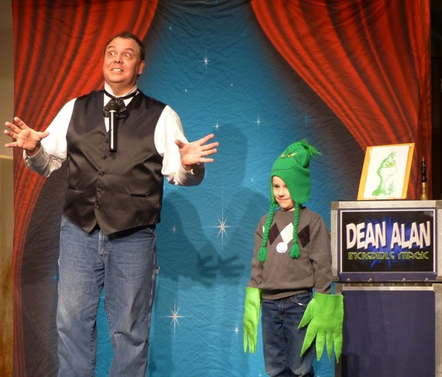
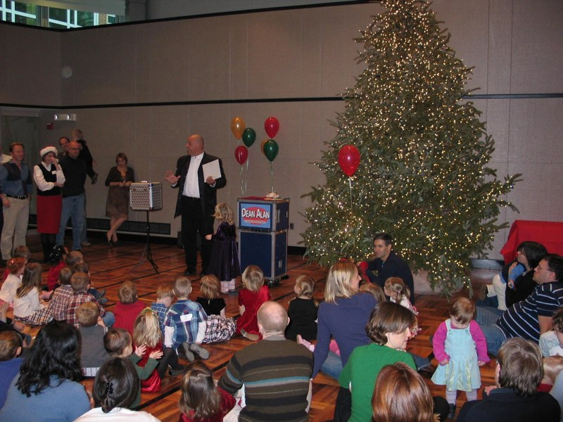
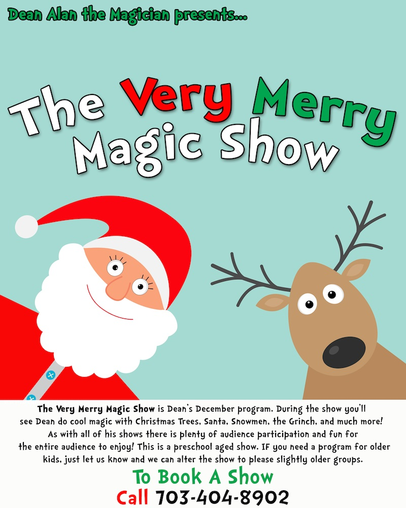

The Very Merry Magic Show
The Very Merry Magic Show is Dean’s December program. During the show you might just see Dean do magic with Christmas Trees, ornaments, Santa, snowmen, the Grinch, and much more. This show is filled with audience participation and lots of enjoyable magic for preschool audiences. IF you’re group has school-aged children, just let us know so we can adjust the program to suit their likes as well.
The show runs approx 40-45 minutes. This will be the final show for the year. IF you prefer we can present the Very FROSTY Magic Show instead of The Very Merry Magic Show. Your choice!



Dean Alan - 703-404-8902
AND If you already have the info you need and are ready to book, you can contact us via phone, email, or by clicking book a show!
IF you click the image below/left you can print out a copy of the show POSTER, and if you click below right you can print out a copy of the show FLYER.

